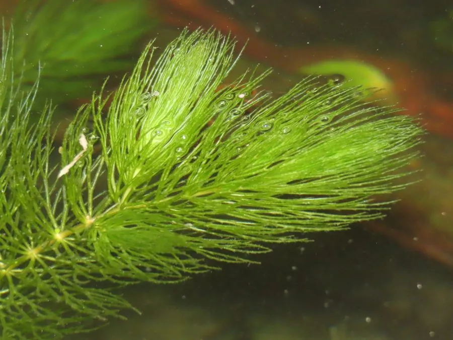

水生植物 · 植物界
金鱼藻 Ceratophyllum demersum

金鱼藻科多年生沉水草本，叶轮生细裂如丝，无真根，是水族箱和鱼缸中常见的沉水植物，可净化水质。
- 分类
- 门被子植物门纲木兰纲目金鱼藻目科金鱼藻科属金鱼藻属
- 栖息环境
- 池塘、湖泊、河沟等静水或缓流水体，喜光、耐污染
- 地理分布
- 广布于全球淡水水域，中国各地池塘河沟常见
- 保护级别
- 暂无评估
物种志
金鱼藻为金鱼藻科金鱼藻属多年生沉水草本，茎细长，长 30–100 厘米，分枝多，无真根，基部可生出假根固着。叶片轮生，每轮 6–10 枚，二至四回二叉分歧，裂片细丝状，边缘有细齿。花极小，单性，雌雄同株，生于叶腋，花期 6–7 月；果实为坚硬的小坚果。
金鱼藻广布于世界各地的池塘、湖泊和缓流河沟，喜温暖、阳光充足的中性或微碱性水体，能漂浮生长也能扎根固定。它没有真正的根，靠叶片直接吸收水中的养分，生长迅速，是水族箱和鱼池中常见的水草，可为鱼虾提供隐蔽场所、吸收多余氮磷并释放氧气。金鱼藻也可作饲料和绿肥，但大量繁殖时会堵塞渠道，需要定期打捞清理。
形态与习性
- 株高茎长 30–100 厘米，分枝多
- 花期6–7 月，花极小，生于叶腋
- 果期7–9 月，小坚果坚硬
- 光照喜充足阳光
- 水分沉水生长，适宜水深 30–100 厘米
- 土壤不要求土壤，可直接吸收水中养分
- 繁殖断枝扦插，繁殖快
- 主要用途水族箱水草、净化水质、饲料绿肥
趣味知识
- 金鱼藻没有真正的根，常漂浮生长，或生出假根固定在水中。
- 它的叶片细裂如丝，轮生排列，是水族箱中优良的产卵和隐蔽场所。
- 金鱼藻能直接吸收水中的氮磷，帮助控制水体富营养化。
- 若生长过密，会堵塞渠道、影响水流，需要定期打捞。